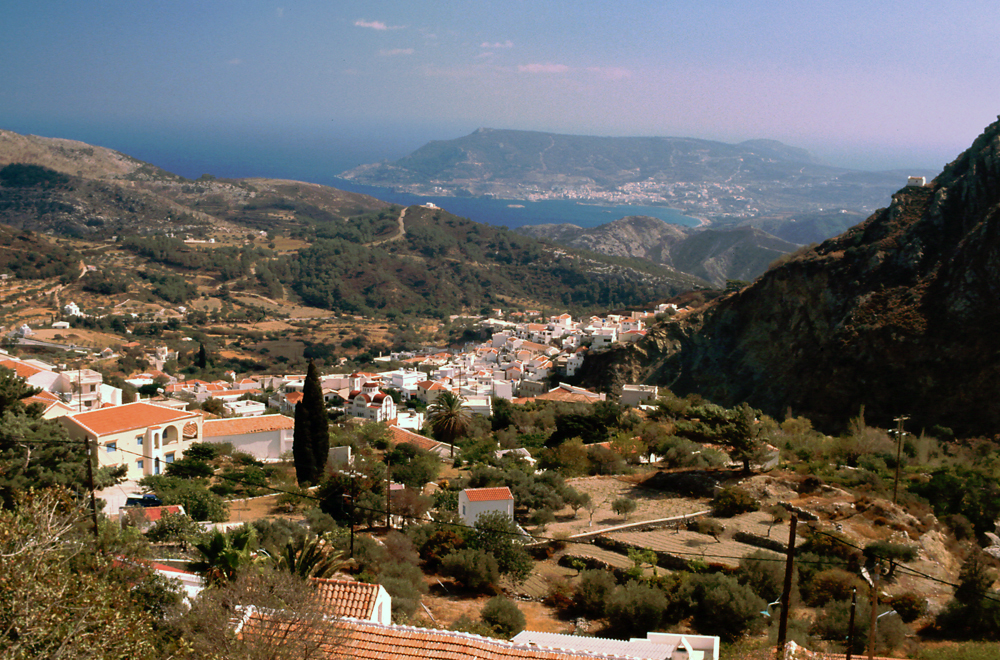
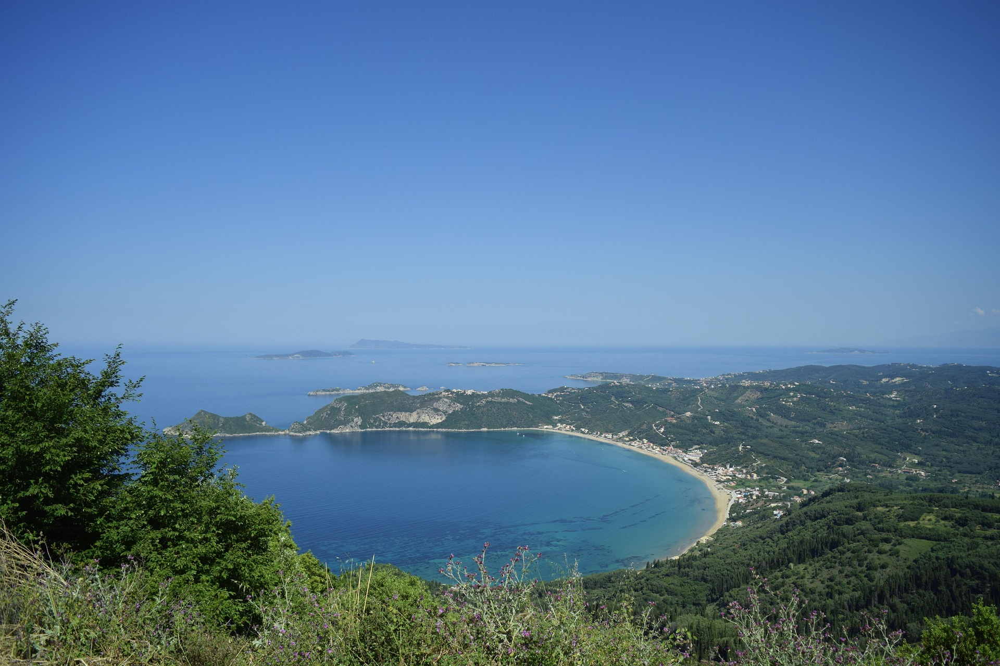
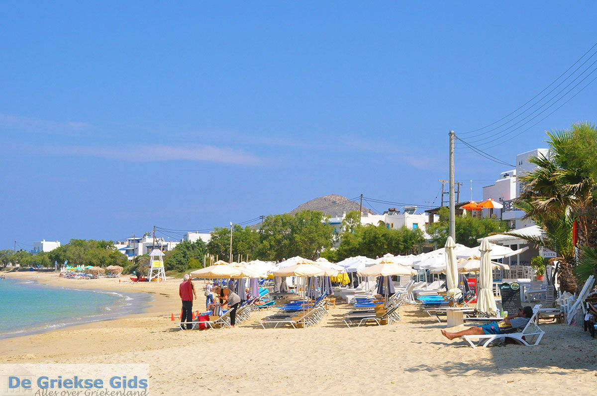
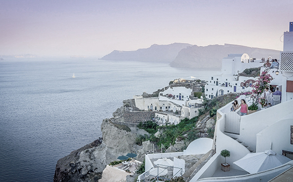

Karpathos

Karpathos liegt auf dem östlichen Südägäischen Inselbogen, der die Gebirgszüge der Peloponnes mit dem Taurusgebirge in der südwestlichen Türkei verbindet und gleichzeitig die Grenze der Ägäis zum Mittelmeer darstellt. Nachbarinseln sind Rhodos, 46 km nordöstlich, und Kasos, 6 km südwestlich, sowie im Norden, getrennt durch eine knapp 100 m breite und ca. 1,5 m tiefe Meerenge, das Eiland Saria. Die größte Länge hat die Insel mit etwa 48 km in Nord-Süd-Richtung, die maximale Breite erreicht fast 12 km, die schmalste Stelle weniger als 3,5 km. Ein kahler, teilweise mit Kiefern bewaldeter Bergzug durchzieht die Insel von Norden bis zur Mitte der Insel. Während im Norden Höhen über 600 m erreicht werden, steigt die Kali Limni (Καλή Λίμνη) im zentralen Inselbereich auf eine Höhe von 1.215 m an, zusammen mit dem Attavyros auf Rhodos die höchste Erhebung der Dodekanesinseln. Südlich davon wird es zunächst hügeliger, im äußersten Süden ist es flach. Ein großer Teil der einst üppigen Bewaldung fiel mehreren verheerenden Waldbränden zum Opfer.
Kefalonia

Die griechische Insel Kefalonia ist 781 km2 groß und hat ca. 37.000 Einwohner, die Hauptstadt ist Argostoli. Die Insel liegt am Ausgang des Golfs von Patras. Im Inselranking liegt Kefalonia im Mittelmeer zwar nur auf Platz elf, sie ist aber die größte der Ionischen Inseln.
Korfu

Korfu (auch Corfu oder Kerkyra) ist die zweitgrößte ionische Insel und liegt vor der griechischen Westküste. Die Insel ist eines der beliebtesten Reiseziele in Griechenland. Das liegt zum einen an den spektakulären Landschaften, weißen Sandstränden, einem aktiven Nachtleben und atemberaubenden Bergen.
Kreta
Die fünftgrößte Insel im Mittelmeer, Kreta, ist die größte griechische Insel. Kreta ist 8,312 km2 groß, es leben 624.000 Menschen hier. Die Hauptstadt ist Heraklion. Eine Insel für viele unterschiedliche Bedürfnisse. Die größte griechische Insel bietet unzählige Strände für Sonnenanbeter, aber auch antike Ausgrabungsstätten für Kulturinteressierte. Wandern kann man im Lefká-Orí-Gebirge im Süden der Insel. Im Norden befinden sich vor allem die touristischen Zentren. Beste Reisezeit: Im Sommer ist es sehr heiß und trocken, vor allem im Süden der Insel, die vom afrikanischen Klima beeinflusst wird. Der Norden hat ein angenehmeres Klima, vor allem von April bis Oktober.
Naxos

DNaxos (griechisch Νάξος (f. sg.), auch Náxia) ist eine griechische Insel im Ägäischen Meer. Sie ist mit einer Fläche von 389,43 km2 die größte Insel der Kykladen und von der Insel Paros nur durch eine schmale Meerenge getrennt.
Santorin

Eine Insel für Griechenlandfans mit Geld. Hier sieht Hellas wie eine Postkarte aus: weiß getünchte Häuser und Kirchen mit blauen Kuppeldächern. In der Hauptsaison gelangen Urlauber mit Charterflugzeugen auf die Hauptinsel des Archipels, Thira. Neben urigen Bergdörfern bietet die Insel den schwarzen Sandstrand von Perissa, felsige Mondlandschaften und eine reiche Auswahl an Hotels und Ferienwohnungen. Beste Reisezeit: Hier gibts Sonne satt und im Sommer Durchschnittstemperaturen von 29 Grad. Wem das zu heiß ist, der kommt im Frühling oder Herbst, wenn das Klima etwas milder wird.